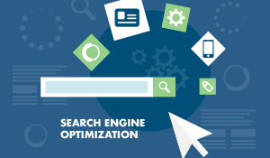
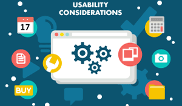
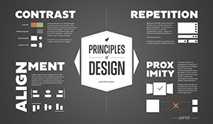

search engine optimization
At a fundamental level, an SEO-friendly site is one that allows a search engine to explore and read pages across the site. Ensuring a search engine can easily crawl and understand your content is the first step to ensuring your visibility in the search engine result pages. Building an SEO-friendly site requires careful planning and a structured approach to representing your business and the services you provide. Check out these 5 sites for learning the nuts and bolts of SEO, information architecture and other SEO guidelines and considerations:
- SEO & Website Design: Everything You Need to Know
- How to Increase Keyword Ranking with Better Keyword Research
- SEO Optimization - Learn to Optimize for SEO
- SEO Basics: 22 Essentials You Need for Optimizing Your Site
- A Simple Step by Step Guide to SEO

usability considerations
A design is not usable or unusable per se; its features, together with the user, what the user wants to do with it, and the user’s environment in performing tasks, determine its level of usability. A usable interface has three main outcomes: It should be easy for the user to become familiar with and competent in using the user interface on the first contact with the website. It should be easy for users to achieve their objective through using the website. It should be easy to recall the user interface and how to use it on subsequent visits. This isn’t the only set of requirements for usability. For example, a usable interface will be relatively error-free when used. We can measure usability throughout the development process, from wireframes to prototypes to the final deliverable. Check out these 5 sites for more usability considerations, key principles and guidelines:
- Usability: A part of the User Experience
- Usability Considerations in Web Design
- Usability Design Considerations for Web Forms
- 5 Key Principles Of Good Website Usability
- User Interface Design Basics
hosting a website
Before you can begin serving out your website files to the public, you need to invest in web hosting. If you have ever shopped for web hosting you already know there are a lot of different options out there. This can make it difficult for a beginner to choose what is best for them. Check out these 5 sites for learning about the most common types of web hosting and other web hosting tips:
- Which Web Hosting is Best For You?
- How to Build and Host Your Website in 2018
- Determining Your Ideal Server Size: Which Package is Right for Me?
- Choose a Web Host
- Who is Hosting This?
cascading style sheets
A CSS rule is formed from: 1. A set of properties, which have values set to update how the HTML content is displayed, for example I want my element's width to be 50% of its parent element, and its background to be red. 2. A selector, which selects the element(s) you want to apply the updated property values to. For example, I want to apply my CSS rule to all the paragraphs in my HTML document. A set of CSS rules contained within a style sheet determines how a webpage should look. Check out these 5 sites for learning the different types of style sheets there are and how to apply your CSS to your HTML:
- How CSS Works
- CSS (Cascading Style Sheets)
- Understand Cascading Style Sheets
- Learn CSS Today The Easy Way
- Tutorials Point: HTML - Style Sheet

designing a website
As graphic design legend Milton Glaser once stated, “The purpose of design is to inform and delight.” Great design has always been about making an impact on the viewer, and a necessary condition for doing so has always been getting noticed. For traditional graphic design, getting noticed meant standing out with bright, bold, or otherwise catchy visual elements. Now designers contend with increasing amounts of clutter, and Web designers in particular must focus on improving all avenues for discovery. Chief among these are search engines, thus making knowledge and consideration of SEO guidelines highly important for good Web design. Far from being two distinct fields, Web design and SEO have a great deal to do with one another and directly affect each other. Beyond that, the core principles behind optimizing for search engines can inform elements of strong design. Check out these 5 sites for basic principles and tips on improving your web design:
- 14 Essential Tips for Improving Your Web Design
- How to Make SEO and Web Design Work in Harmony to Achieve Success
- How To Make A Website
- What You Need to Build a Website – The Definitive Checklist
- Building Wordpress Sites with Adobe Dreamweaver CC